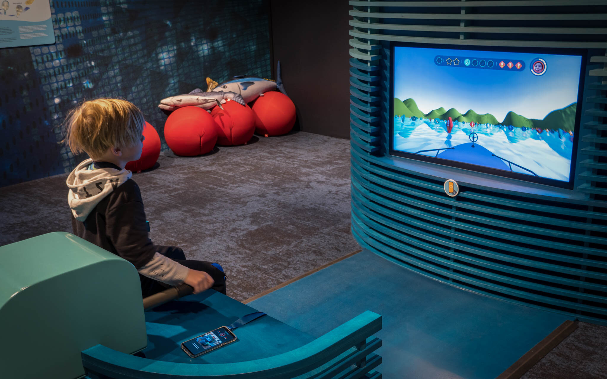
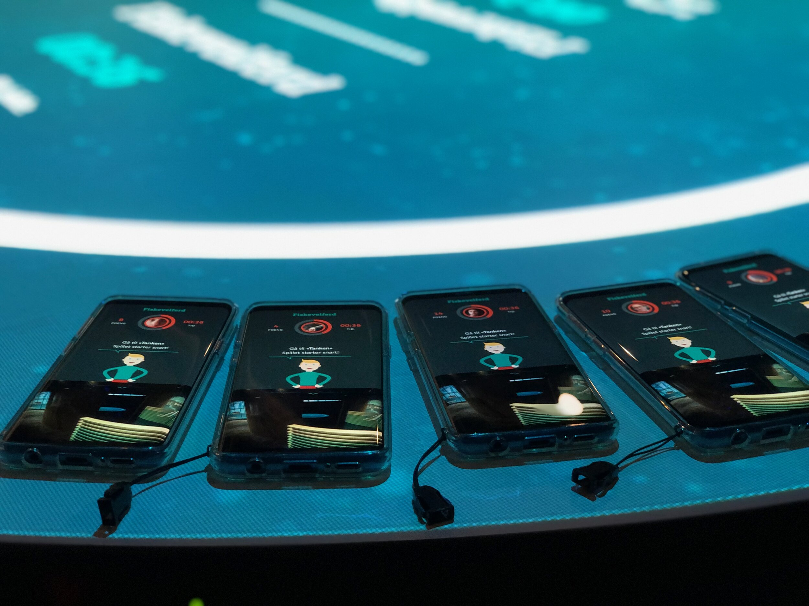
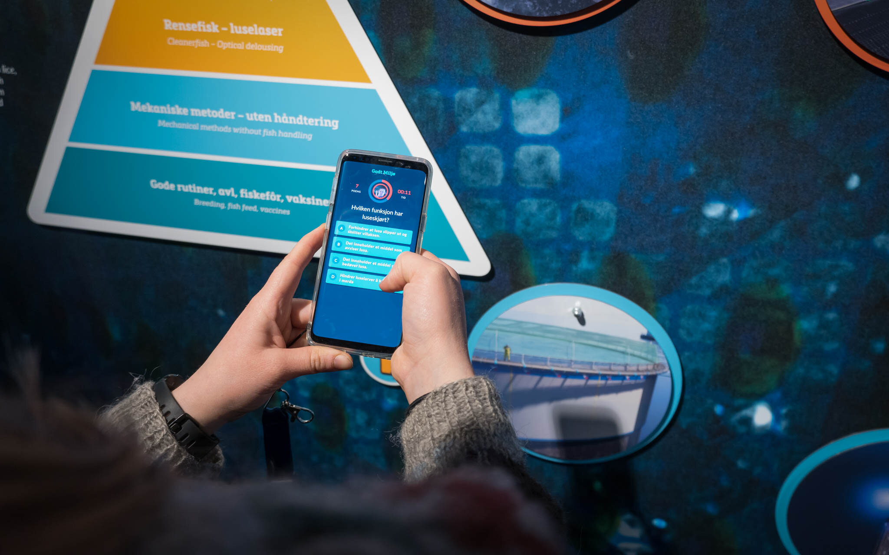

House of Salmon
Interaction Design, Visual Design, Front-End Development, Game Development, Unity, C#, React, TypeScript, Android, Java, Capacitor, Craft CMS, Phidgets

House of Salmon is a visitation for aquaculture. Here students and other can learn about how salmon farming works and it‘s history.
While working for Back I designed and programmed experiences for several interactive installations and smartphone.

This included a phone app that allows participants to register points, activate various installations and play mini games connected to various installations. I worked on software for several installations, including a 3D game where you drive a boat to gather tokens tokens representing food for salmon.

Photo credit: Emile Dahlman/Lars-Petter Garen